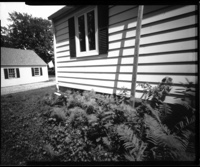
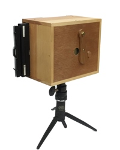
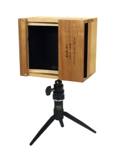

| In the spring of 2018 I had an urge to revisit analog photo processes, built a 4x5 pinhole camera, and tried a few initial exposures in the back yard with paper negatives. | |
|
The initial results were encouraging, and I made a few more images with the camera over that summer. Note in the sample to the right, you can see a couple seams in our aluminum siding.
I gave the camera another go the following summer, carrying it on a five-day canoe expedition through the Adirondacks with several members of Gryffin's Scout troop that July. This time the film holders were loaded with film instead of printing paper, and I was quite pleased with the results. |
 |
|---|---|
|  |
The camera body is constructed from pine, cherry, and mahogany plywood, with a few brass accents. I also steam-bent strips of hickory to form the springs which secure the film holder. The camera features a 75mm focal length, and an effective aperture of F205. The pinhole diameter is 0.014 inches, and was formed in 0.002-inch brass shim stock using a pin.
The small pinhole requires exposure times (listed under each image) that are much too long for handholding the camera. In full sun with ISO 100 film a typical exposure will be a relatively brief two to four seconds. For comparison, a conventional camera using the same film can capture an image in 1/125 of a second, or less. |
|
The 75mm focal length gives an angle of view similar to that realized with a 21mm lens on a full frame 35mm SLR. The diagonal angle of view is just over 90 degrees, which translates to about 80 degrees across the 5-inch length of the image area, and 68 degrees along the shorter 4-inch dimension.
The shutter is a simple lever made from cherry, with the handle and pivot turned from ¼-inch brass rod. I must open it fully to rest against the stop, to prevent it from appearing along the short edge of an image. |
 |
|
Leaving the camera back open allows easy access to the pinhole and shutter mechanism. This also allowed packing my light meter and exposure calculator within the camera body during the canoe trip. The small brass screws on the camera top and right side assist framing, though nothing is guaranteed with a pinhole camera.
I continue to use this camera, and will periodically update these pages to share new images. | |
|
Copyright 2020, Thayer Syme | |